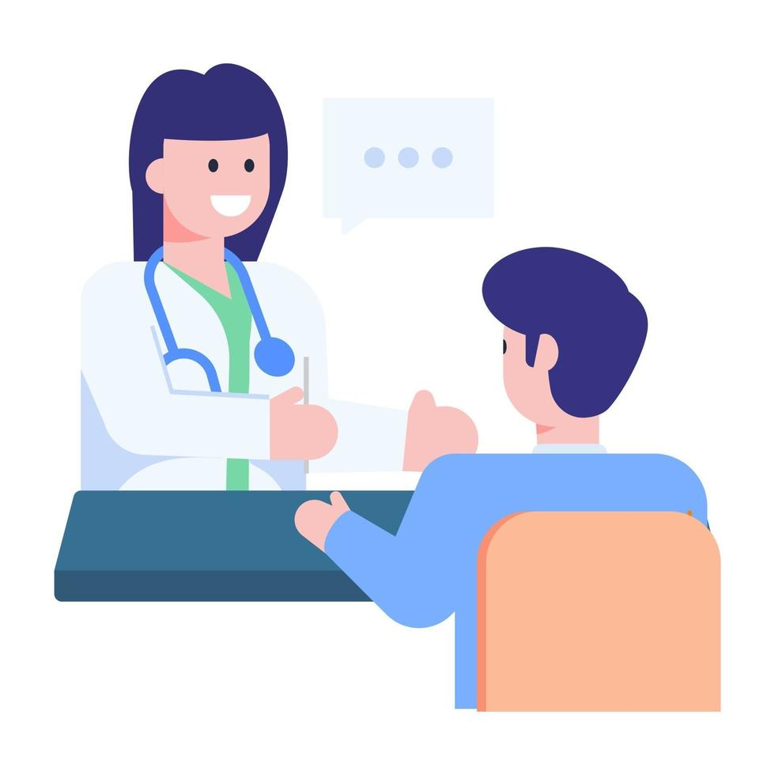

Bem-vindo! ao UsoCerto
Você sabia que o consumo responsável de medicamentos faz toda a diferença para a sua saúde? Usá-los corretamente garante a eficácia do tratamento e previne riscos que podem comprometer seu bem-estar. Aqui, além de aprender sobre o uso seguro de medicamentos, você também encontra informações sobre remédios que não estão mais em fabricação. Continue navegando e cuide da sua saúde com consciência!
Veja os medicamentos que estão fora de fabricação
O que é o Consumo Consciente de Medicamentos
Consumo consciente de medicamentos é a prática de usar os medicamentos de forma responsável, seguindo sempre a prescrição médica e as orientações sobre o uso, dosagem, horário e condições de armazenamento. Isso envolve também o descarte adequado dos medicamentos vencidos e a comunicação com os profissionais de saúde sobre outros tratamentos que você está realizando.Quando utilizados de forma responsável, os medicamentos têm o poder de tratar doenças e aliviar sintomas com segurança. Já o uso inadequado pode resultar em efeitos colaterais graves, interações medicamentosas perigosas, resistência a medicamentos, além de mascarar sintomas importantes de doenças graves, o que pode retardar diagnósticos e agravar quadros de saúde. Além disso, o uso irresponsável de medicamentos pode levar ao desperdício, sobrecarregando o sistema de saúde e prejudicando o meio ambiente.
Como Praticar o Consumo Consciente de Medicamentos?
O uso correto dos medicamentos é essencial para garantir que o tratamento seja eficaz e seguro. O consumo consciente de medicamentos significa seguir as orientações médicas, tomar os remédios conforme a dosagem e horários recomendados, e nunca usar medicamentos sem a orientação de um profissional de saúde. Além disso, é importante armazenar os medicamentos de forma adequada e descartar os vencidos corretamente. Isso ajuda a evitar problemas como efeitos colaterais, interações perigosas entre remédios e até mesmo o desperdício de medicamentos.Quando tomamos medicamentos de maneira irresponsável, podemos enfrentar sérios problemas de saúde. O uso indevido pode causar reações adversas, como náuseas e tontura, além de agravar doenças. Algumas combinações de medicamentos podem ser perigosas e até colocar a vida em risco. O uso excessivo de antibióticos, por exemplo, pode gerar resistência, tornando as infecções mais difíceis de tratar. A automedicação também pode esconder doenças graves, atrasando diagnósticos importantes. O consumo inadequado de medicamentos psicotrópicos pode afetar a saúde mental, enquanto o uso excessivo de analgésicos pode causar dependência.

Ficou alguma dúvida?
Por que devo ler a bula do medicamento?
A bula contém informações essenciais sobre o medicamento, como indicações, dosagem correta, possíveis efeitos colaterais, contraindicações e interações com outros remédios. Ler a bula ajuda a garantir um uso seguro e eficaz, evitando riscos à saúde.
Qual a importância de evitar a automedicação?
A automedicação pode ser perigosa, pois pode mascarar sintomas graves e levar a diagnósticos errados. Consultar um médico antes de tomar qualquer medicamento, mesmo para sintomas simples, é essencial para garantir que o tratamento seja seguro e eficaz.
O que fazer com medicamentos vencidos ou que não serão mais usados?
Medicamentos vencidos ou não utilizados devem ser descartados corretamente para evitar danos à saúde e ao meio ambiente. Nunca jogue remédios no lixo comum, no vaso sanitário ou na pia. O ideal é levá-los a farmácias, postos de saúde ou locais especializados em descarte seguro de medicamentos.
Qual a importância de saber sobre medicamentos que não estão mais sendo fabricados?
Saber quais medicamentos saíram de circulação é essencial para evitar o uso de remédios desatualizados ou sem eficácia comprovada. Além disso, permite que os pacientes busquem alternativas seguras com orientação médica, garantindo a continuidade do tratamento sem riscos para a saúde.